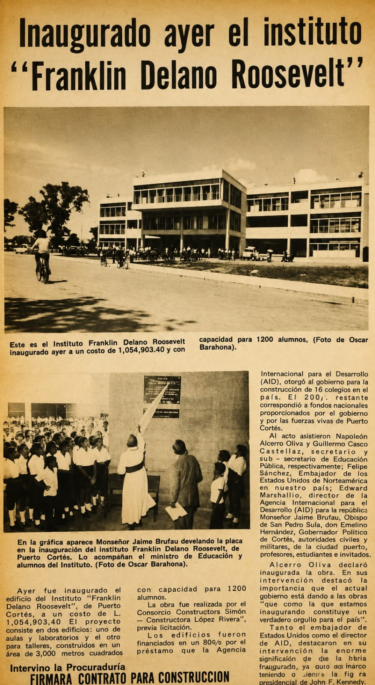
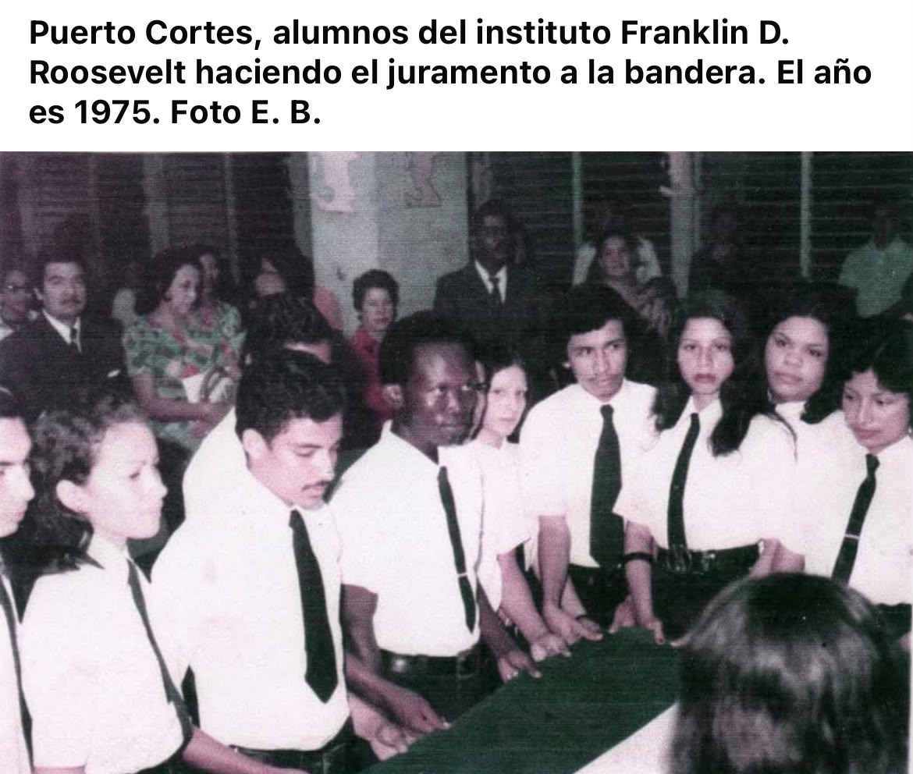
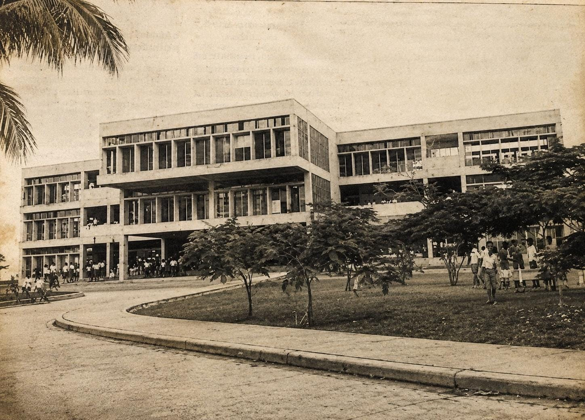
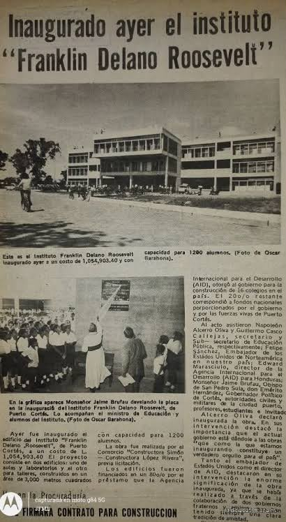

1945
Fundación del Instituto
Se funda el Instituto Franklin Delano Roosevelt en Puerto Cortés, Honduras, como respuesta a la necesidad de educación secundaria en la región.
Más de 80 años formando generaciones en Puerto Cortés
El Instituto Franklin Delano Roosevelt (FDR), ubicado en Puerto Cortés, Honduras, fue fundado en 1945. Desde sus inicios se convirtió en una de las instituciones educativas más importantes de la ciudad, ofreciendo educación secundaria a jóvenes de Puerto Cortés y comunidades cercanas.
Durante las décadas siguientes, el instituto fue creciendo tanto en número de estudiantes como en infraestructura y programas educativos. Con el paso de los años, el FDR incorporó diferentes modalidades de educación, incluyendo Ciencias y Humanidades y Bachilleratos Técnicos Profesionales, entre ellos Informática y Administración de Empresas.
Actualmente, con más de 80 años de historia, el Franklin Delano Roosevelt continúa siendo uno de los principales centros de educación media de Puerto Cortés, formando estudiantes tanto académicamente como en áreas técnicas y profesionales.

Se funda el Instituto Franklin Delano Roosevelt en Puerto Cortés, Honduras, como respuesta a la necesidad de educación secundaria en la región.
Se construye un nuevo edificio con 16 aulas debido al aumento de la matrícula y la necesidad de mejores instalaciones.
El instituto participa en la World Robot Olympiad, destacándose en competencias tecnológicas y robótica educativa.
Durante las tormentas tropicales Eta e Iota, las instalaciones del FDR sirven como refugio para personas afectadas por las inundaciones.
Estudiantes del FDR obtienen el primer lugar en una competencia académica organizada por la Universidad Tecnológica de Honduras (UTH).
El instituto continúa expandiendo su oferta educativa con modalidades de Ciencias y Humanidades, Bachillerato Técnico en Informática y Administración de Empresas.



1945
Puerto Cortés, Cortés, Honduras
Educación con Excelencia
Trabajo, Lucha y Fe
WRO 2019, 1er lugar UTH 2023
Tercer lugar en Olimpiada Nacional de Química en 2024